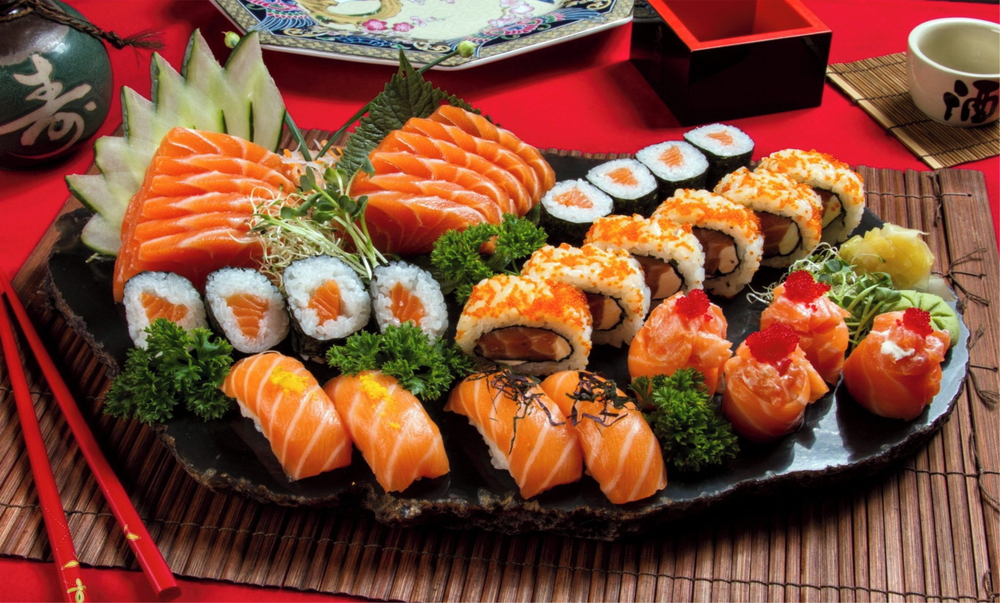
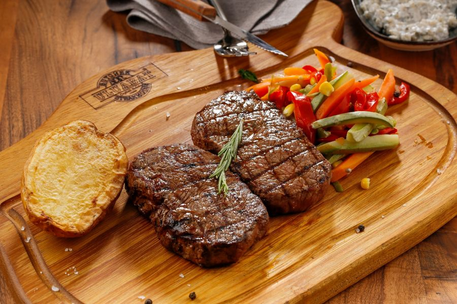

Pratos em Destaque
-

Comida Japonesa
Barca de 100 peças incriveis
-

Churrasco diversos
Desfrute de um churrasco a vontade
-

Macarrão a Bolonhesa
Um dos melhores macarrão 100% Caseiro
Sobre Nós
Somos um Restaurante Dedicado a preparo de pratos impressionantes e que eleve o nivel de referencia Gastronomica a outro nivel. Nosso restaurante possui avalição de 5 Estrelas sendo recebido diretamente da fonte: Vozes da minha cabeça.